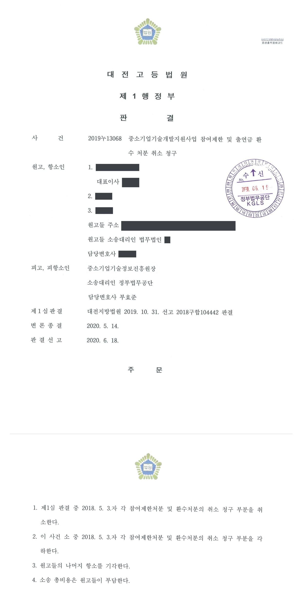

국가연구개발사업 참여제한 및 출연금 환수처분 취소소송 (1·2심)
대전지방법원 2018구합104442 · 대전고등법원 2019누13068 · 담당변호사 부효준
판결문


사건의 요지
어군탐지 기능을 갖춘 GPS 부표 개발 과제가 '실패·불성실'로 평가되어 내려진 3년 참여제한과 약 1억 8천만 원의 출연금 환수처분을 다툰 사건입니다. 항소심은 이의신청 기각 통지(이의결정)를 새로운 처분으로 보아 원처분 취소청구를 각하하는 한편, 개발기간 뒤에 받은 시험성적서로는 목표 달성을 인정할 수 없다는 등의 이유로 처분이 적법하다고 보아 항소를 기각하였습니다.
사건의 주요 내용
선박용 전기·전자제품을 만드는 중소기업인 원고 회사는 2013년 구매조건부 신제품개발사업(해외수요처 포함)에서 원양어업 회사를 수요처로 하는 '어군탐지 기능을 갖춘 GPS 부표 개발' 과제를 수행하였습니다. 개발기간은 2013년 12월부터 2014년 12월까지 12개월이었다가 2015년 3월까지 연장되었고, 과제는 2015년 2월 업무이관으로 당초의 전문기관에서 피고 전문기관으로 넘어왔습니다. 원고 회사의 당시 대표이사와 과제책임자도 함께 원고가 되었습니다.
원고 회사는 2015년 7월 최종보고서를 제출하였는데, 전문기관은 2015년 12월 최종평가에서 과제를 '실패'로 평가하였고, 이의신청과 성실성 입증보고서 제출을 거친 2016년 3월 성실성검증평가에서도 '실패(불성실)'로 판정하였습니다. 전문기관은 2018년 5월 '연구개발과정을 불성실하게 수행하여 그 결과가 극히 불량한 경우'에 해당한다는 이유로 원고들에게 각 3년의 참여제한을, 원고 회사에 정부출연금 약 1억 8,245만 원의 환수를 통보하였습니다(원처분).
원고들이 이의신청을 하자 전문기관은 2018년 6월 이의신청을 기각하면서 참여제한 기간의 기산일을 이의결정 통보일 다음 날로, 환수금 납부기한을 2018년 7월로 바꾸어 통지하였습니다(이의결정). 원고들은 원처분과 이의결정의 취소를 모두 구하는 소송을 제기하였고, 부효준 변호사는 1·2심에서 전문기관을 대리하였습니다.
쟁점
- 참여제한 기간의 기산일과 환수금 납부기한을 바꾸어 통지한 이의결정이 원처분과 별개로 항고소송의 대상이 되는 처분인지, 그렇다면 원처분의 취소를 구하는 부분은 어떻게 되는지
- 사업계획서의 평가지표(어군탐지거리)에 비추어 어군탐지 기능을 구현하는 소프트웨어 개발이 과제 목표에 포함되는지, 수요처의 자체 평가나 개발기간 종료 뒤 받은 시험성적서로 목표 달성을 인정할 수 있는지
- 연구노트의 기재 수준과 공인인증기관 시험 미실시 등을 근거로 연구개발과정이 불성실하게 수행되었다고 볼 수 있는지
원고의 주장
- 과제의 목표는 에코사운더(음향 측심기) 하드웨어를 구현하는 것인데, 전문기관이 이에 연동하는 소프트웨어를 개발하지 못하였다는 이유로 연구개발 결과가 극히 불량하다고 잘못 판단하였다고 주장하였습니다.
- 연구개발과정의 성실성은 결과의 성패가 아니라 각 단계가 성실히 수행되었는지로 판단해야 하는데 결과 실패에만 중점을 두어 과정이 불성실하였다고 본 것은 잘못이고, 수요처의 평가와 공인시험기관의 시험결과로 성능지표를 달성하였음이 확인된다고 주장하였습니다.
- 따라서 원처분과 이의결정은 처분사유가 없거나 재량권을 일탈·남용한 것으로서 위법하다고 주장하였습니다.
부효준 변호사의 주장
- 본안 전 항변으로, 이의결정은 원처분을 그대로 유지함을 전제로 이의신청을 받아들이지 않는다는 취지에 불과하여 원고들의 권리·의무에 새로운 변동을 가져오지 않으므로 항고소송의 대상인 처분이 아니라고 주장하였습니다.
- 본안에서는 사업계획서가 어군탐지거리를 평가지표로 삼고 있어 어군탐지 기능을 구현하는 소프트웨어가 과제 목표에 포함되고, 공인인증기관 시험성적서 없이 최종보고서에 달성도를 100%로 기재한 점, 개발기간이 끝난 뒤 받은 시험성적서는 최종평가의 판단자료가 될 수 없는 점, 연구노트가 협약이 요구하는 수준에 미치지 못하는 점 등을 들어 전문가 평가위원회의 '실패·불성실' 판정이 존중되어야 한다고 다투었습니다.
법원의 판단
1심(대전지방법원)은 민원 이의신청 기각결정의 처분성을 부정한 대법원 판례(2012. 11. 15. 선고 2010두8676 판결)에 따라 이의결정은 처분이 아니라고 보아 그 취소청구를 각하하고, 원처분 취소청구는 처분사유가 인정된다는 이유로 기각하였습니다. 항소심(대전고등법원)은 이와 달리, 이의결정이 참여제한의 시적 범위와 환수금 납부기한(지연손해금 기산점)을 바꾸었고 전문기관이 평가위원회를 다시 열어 처분사유와 양정을 재심사한 뒤 원처분과 같은 형식의 통지서에 불복방법까지 안내한 점을 들어 이의결정을 독립한 처분으로 인정하였습니다. 침익적 처분에 대한 이의결정은 거부처분 이의신청 기각결정과 성질이 다르다고도 하였습니다.
그 결과 원처분은 이의결정에 의하여 취소되어 효력을 잃었으므로, 항소심은 1심 판결 중 원처분 취소청구 부분을 취소하고 그 부분 소를 각하하였습니다. 이의결정의 위법 여부에 관하여는, 과제의 핵심은 어군탐지 기능이 있는 GPS 부표의 개발이므로 어군탐지 정보를 수집·전송하는 소프트웨어의 작동이 목표에 포함되는데 이에 관한 입증자료가 없고, 다른 5개 성능지표도 공인인증기관 시험성적서 없이 100% 달성으로 기재되었으며, 개발기간 종료 약 10개월 뒤와 4년 2개월 뒤에 받은 시험결과는 최종평가의 판단자료가 될 수 없고 수요처의 평가는 객관적 측정방법이 아니라고 보아 결과가 극히 불량하다고 인정하였습니다.
연구개발과정도 불성실하였다고 보았습니다. 핵심 부분인 어군탐지에 관하여 실제 수행한 업무나 실험이 입증되지 않았고, 공인인증기관 시험을 받으려 노력한 자료가 없으며, 연구노트에는 기록자·점검자 서명과 작성일자 등 기본 사항과 개발일정·실험결과가 빠져 있어 협약과 연구노트 지침이 요구하는 수준에 미치지 못한다는 것입니다. 이에 따라 이의결정은 처분사유가 인정되고 법령의 처분기준에 따라 이루어져 재량권 일탈·남용이 없다고 보았으나, 원고들만 항소한 사건에서 1심의 각하를 기각으로 바꿀 수 없다는 불이익변경금지원칙에 따라 이 부분 항소를 기각하였습니다.
원래의 참여제한처분 내지 출연금 환수처분만을 항고소송의 대상이 되는 처분으로 해석한다면, 이의신청을 제기한 사람은 그 결과를 기다리는 동안 행정소송법 제20조 제1항 본문 또는 행정심판법 제27조 제1항의 쟁송기간 도과로 인한 불이익을 입을 염려가 발생하게 된다. 나아가 이의신청을 제기한 사람들로서는 제소기간 만료가 임박할 때까지 행정청의 응답이 없는 경우 그러한 상태에서 별도의 행정쟁송을 제기하여야만 제소기간을 준수할 수 있을 것인데, 그 별도의 행정쟁송 도중 이의신청이 인용됨에 따라 처분의 내용이 변경되는 경우 해당 쟁송의 이익이나 필요성이 없게 되어 부적법해질 수 있고, 혹은 이의신청이 일부 인용되었음에도 불이익이 남아있는 경우라면 다시 처분변경으로 인한 청구의 변경 등을 거쳐야만 할 것이다. 이와 같은 법률관계의 혼란이나 불필요한 절차 이행의 강요는 국가의 위법ㆍ부당한 처분(행정작용)으로부터 국민을 구제한다는 행정쟁송의 기본이념에 맞지 않는 것이다. 따라서 이의신청에 대한 결정을 별도의 처분으로 취급하여 행정쟁송을 제기할 수 있도록 해야 할 현실적 필요성이 매우 크다고 할 것이다.
대전고등법원 2019누13068 판결 이유 '3. 나. 이 사건 이의결정의 처분성에 대한 판단' 2) 마)
한편 중소기업기술혁신법에 따른 연구개발이 당초 계획에 따라 적정하게 이루어졌는지에 대한 판단은 과학기술적으로 고도의 전문성을 요하므로, 연구개발결과나 과정을 평가함에 있어 전문가로 구성된 위원회를 구성하여 평가를 거치고 그 평가결과에 대한 이의신청 절차까지 거쳤음에도 연구개발결과가 극히 불량하다고 판단되었고, 나아가 연구개발과정 또한 불성실하다고 판단되었다면, 그 판단의 사실적 기초가 없다거나 재량권을 일탈ㆍ남용하였다고 할 수 있을 정도로 사회통념상 현저히 부당하다는 특별한 사정이 인정되지 않는 이상, 그와 같은 피고의 재량판단은 최대한 존중될 필요가 있다.
대전고등법원 2019누13068 판결 이유 '4. 나. 판단의 전제' 2)
그러나 위 시험평가는 연장된 기술개발기간 종료일인 2015. 3. 19.로부터 약 10개월 이후인 2016. 1. 26.경 행하여진 것으로, 이를 들어 원고들이 2015. 7. 16. 피고에게 최종보고서를 제출할 당시 공인인증기관의 시험성적을 갖추었다고 보기는 어렵다. 과제의 최종평가에 있어서 판단자료가 되는 것은 최종보고서 및 이에 관한 증빙자료이므로(이 사건 운영요령 제25조 제2항), 최종평가 이후에 제출된 자료는 과제를 성실하게 수행하였는지 등의 판단에 관한 보완자료로는 활용될 수 있으나, 원칙적으로 개발 목표 달성의 판단자료가 될 수는 없다고 할 것이다[나아가 원고들은 2019. 12. 23.에 이르러서야 이 법원에 공인시험기관이 2019. 5. 13.에 실시한 2차 시험평가 결과(갑 제21호증)를 제출하였으나, 기술개발기간 종료일로부터 약 4년 2개월이 경과한 시점의 시험평가 결과가 이 사건 과제의 개발 목표 달성 여부에 어떠한 영향을 준다고 보기 어렵다].
대전고등법원 2019누13068 판결 이유 '4. 다. 이 사건 과제의 결과가 극히 불량한 경우에 해당하는지 여부' 3)
※ 판결 이유 가운데 이 사건의 판단 기준이 된 부분을 그대로 옮긴 것으로, 당사자 이름 등은 가렸습니다.
이 사건이 보여 주는 것
이 판결은 전문기관의 이의결정이 참여제한 기간의 기산일과 환수금 납부기한을 바꾸었다면 그 자체가 새로운 처분이 되어 원처분은 효력을 잃고, 소송은 이의결정을 대상으로 하여야 한다고 본 사례입니다. 1심은 반대로 이의결정이 처분이 아니라고 보았는데, 같은 쟁점에서 법원의 판단이 갈리므로 원처분과 이의결정을 함께 다투고 원처분의 제소기간도 지키는 것이 안전합니다.
본안에서는 '어떤 자료가 최종평가의 판단자료가 되는지'가 결정적이었습니다. 최종평가는 최종보고서와 그때까지 제출된 증빙자료로 이루어지므로, 개발기간이 끝난 뒤 받은 공인시험성적서는 성실성 판단의 보완자료가 될 수 있을 뿐 목표 달성의 근거가 되지 못하고, 수요처가 스스로 한 평가는 공인인증기관 시험에 준하는 객관적 측정방법으로 인정되지 않습니다. 연구노트는 기록자·점검자 서명과 작성일자, 실험의 일시·절차·결과가 적혀 제3자가 재현할 수 있는 수준이어야 하며, 메모 수준의 연구노트는 성실 수행의 증거가 되지 못합니다.
관련 법령구 중소기업 기술혁신 촉진법 제29조, 제31조 제1항 제1호·제4항, 제32조 · 구 중소기업 기술혁신 촉진법 시행령 제20조 제2항, 제21조 제1항, [별표 2] · 구 중소기업기술개발 지원사업 운영요령 제24조, 제25조, 제38조 · 국가연구개발사업의 관리 등에 관한 규정 제29조 제1항 · 민원사무처리에 관한 법률 제18조 제1항 · 행정소송법 제20조 제1항 · 행정심판법 제27조 제1항
관련 단어참여제한출연금 환수이의결정의 처분성원처분 효력 상실구매조건부 신제품개발사업불성실 수행결과 극히 불량공인인증기관 시험성적서최종평가의 판단자료연구노트 작성의무불이익변경금지항소 기각각하
비슷한 처분을 받으셨다면
국가연구개발 제재처분은 사전통지를 받은 날부터 20일 이내에 재검토 요청 의견을 내고, 처분이 있음을 안 날부터 90일 이내에 취소소송을 제기해야 합니다. 처분서나 사전통지서를 받은 날짜부터 확인해 드립니다.